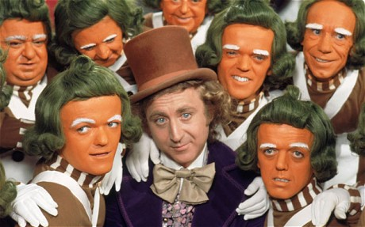

Average Rating:
Description: Oompa-Loompas are knee-high beings who originate from Loompaland. The Oompa-Loompas would end up being preyed upon or attacked by the various predators that also reside in Loompaland before Wonka invited them to work at his factory and are paid in their favorite food, Cocoa beans, which were extremely rare on their island. The Oompa-Loompas are also mischievous, loving practical jokes and singing songs which, according to Wonka, they are very good at improvising. With each misbehaving child's exit, the Oompa-Loompas sing moralizing songs of the child's folly. In the 1971 film, Willy Wonka & the Chocolate Factory, they were written to be played by actors with dwarfism and are portrayed as orange-skinned, green-haired men in striped shirts and baggy lederhosen-like pants. In the 2005 film, all of the Oompa-Loompas are played by Indian actor Deep Roy. They were wearing their tribal clothing during their time in Loompaland and wearing typical factory worker uniforms in Wonka's Factory. Some of the female Oompa-Loompas worked in the administration offices.